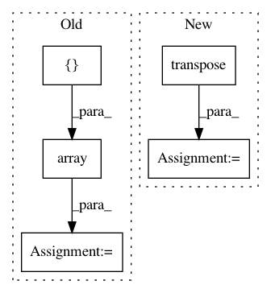

42b4d58e715c17e06dee67cac5c9cc721f4fd651,geomstats/special_orthogonal_group.py,SpecialOrthogonalGroup,rotation_vector_from_matrix,#SpecialOrthogonalGroup#Any#Any#,243
Before Change
cos_angle = np.clip(cos_angle, -1, 1)
theta = np.arccos(cos_angle, dtype=np.float64)
r = np.array([rot_mat[2, 1] - rot_mat[1, 2],
rot_mat[0, 2] - rot_mat[2, 0],
rot_mat[1, 0] - rot_mat[0, 1]])
// -- theta is not close to 0 or pi
if np.sin(theta) >= epsilon:
rot_vec = theta / (2. * np.sin(theta)) * r
After Change
cos_angle = np.clip(cos_angle, -1, 1)
angle = np.arccos(cos_angle, dtype=np.float64)
rot_vec = vector_from_skew_matrix(rot_mat - rot_mat.transpose())
// -- angle is not close to 0 or pi
if np.sin(angle) > epsilon:
rot_vec = angle / (2. * np.sin(angle)) * rot_vec
In pattern: SUPERPATTERN
Frequency: 3
Non-data size: 5
Instances
Project Name: geomstats/geomstats
Commit Name: 42b4d58e715c17e06dee67cac5c9cc721f4fd651
Time: 2018-01-28
Author: ninamio78@gmail.com
File Name: geomstats/special_orthogonal_group.py
Class Name: SpecialOrthogonalGroup
Method Name: rotation_vector_from_matrix
Project Name: senarvi/theanolm
Commit Name: 1cd5a7685354e4fd0ebb88c7b5d78fbd08c12e5c
Time: 2016-04-27
Author: seppo.git@marjaniemi.com
File Name: theanolm/textscorer.py
Class Name: TextScorer
Method Name: score_sequence
Project Name: 1adrianb/face-alignment
Commit Name: 7c931c89f7cf3b1ca61bf2cbda884a276facc1c8
Time: 2020-12-18
Author: adrian@adrianbulat.com
File Name: test/facealignment_test.py
Class Name: Tester
Method Name: test_predict_points